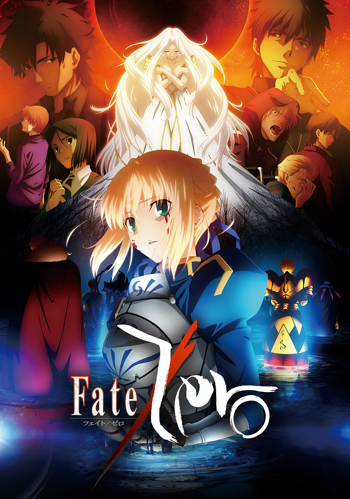
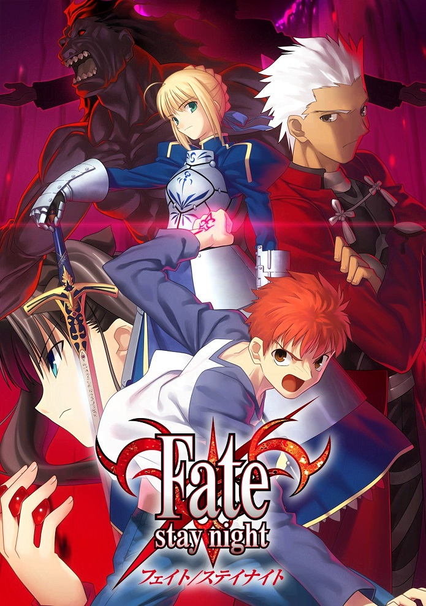
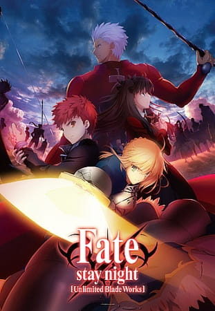
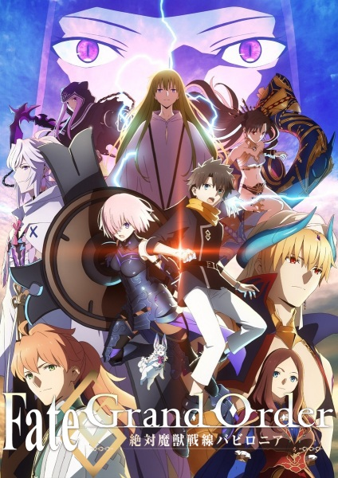

Fate Tv Series
Even though the Fate franchise dates back to 2004, It saw an explosion in its popularity in 2015.

Fate/Zero
2011

Fate/Zero 2nd Season
2012

Fate/stay night
2006

Fate/stay night: Unlimited Blade Works
2014

Fate/stay night: Unlimited Blade Works 2nd Season
2015
